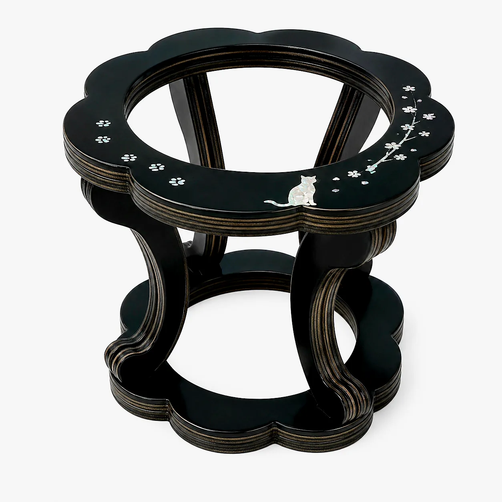
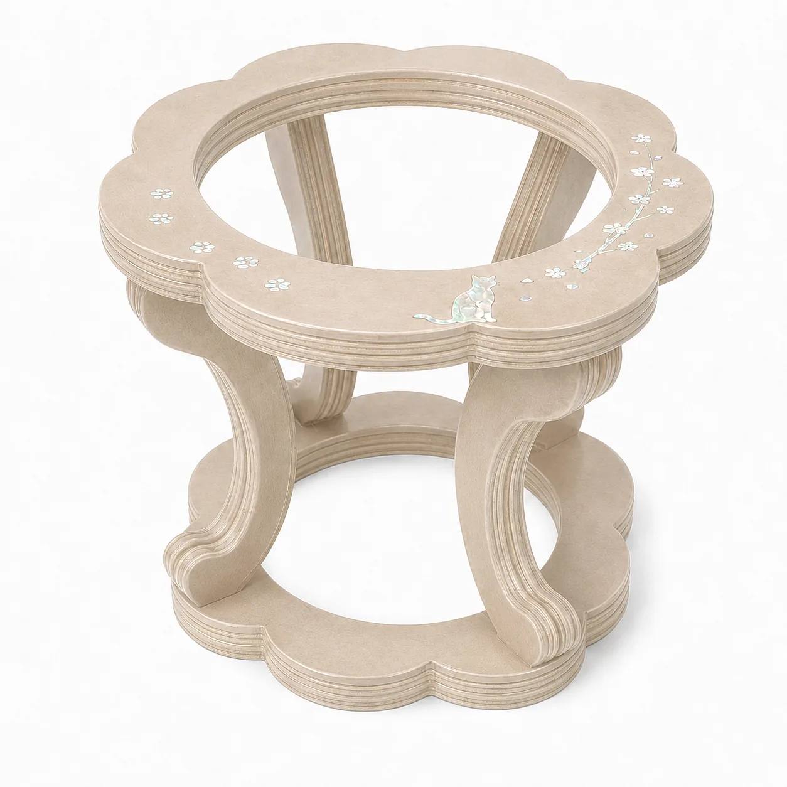

COLLECTION
아이가 살아 있는 동안 쓰는 물건도 같은 기법으로 만듭니다.

LIVING
한국의 전통 소반에서 형태를 가져왔습니다. 상판을 꽃 모양으로 깎고 가운데를 비워, 유리나 도자 볼을 올려 쓰는 구조입니다.
아이가 입을 대는 부분은 볼이고, 옻칠면은 아닙니다. 볼만 꺼내 씻으면 되기 때문에 매일 쓰기에 부담이 없습니다.
받침을 두면 물그릇의 높이가 올라갑니다. 고개를 덜 숙이고 마실 수 있어, 목과 어깨에 무리가 덜 갑니다.

흑칠 · 매화와 고양이 도안

연회색 · 매화와 고양이 도안

상판 자개 도안 접사
NAME TAG
자개를 잘라 만든 인식표입니다. 뒷면에 이름과 연락처를 새기고, 앞면에는 아이의 형태나 문양을 넣습니다.
두 가지로 준비하고 있습니다. 끈에 매다는 기본형과, 리본끈·전통 매듭·금박을 더한 장식형입니다.
준비 중 · 자개는 얇아 파손될 수 있어, 내구성 시험을 마친 뒤 내놓을 예정입니다.
세제나 알코올은 표면을 상하게 합니다.
오래 닿으면 색이 변할 수 있습니다.
옻칠은 물에 강하지만 목재는 그렇지 않습니다.
쓰다가 상한 부분은 다시 칠해 드립니다. 문의해 주세요.
출시 알림, 구매 문의, 협업 제안 모두 환영합니다.